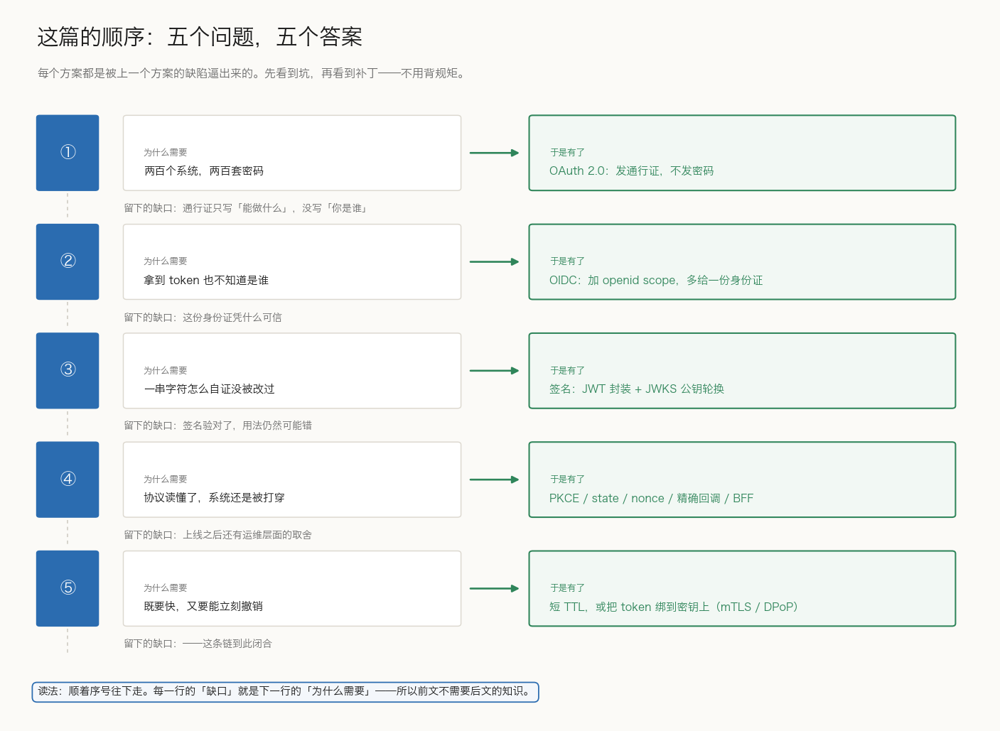
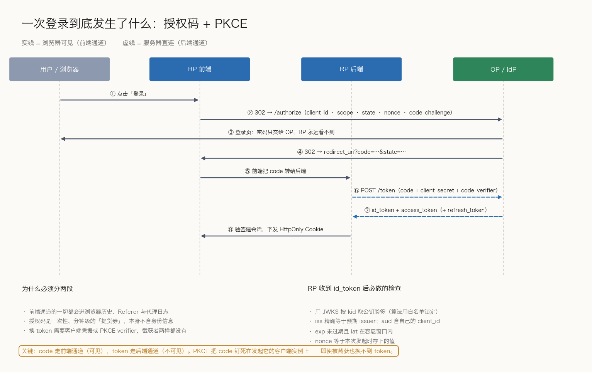
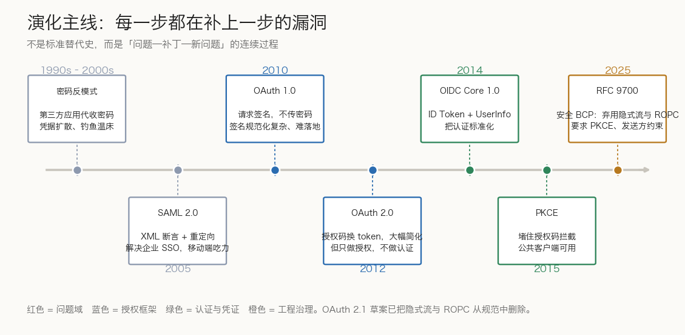
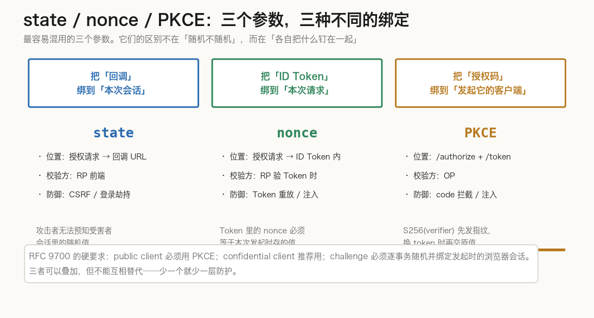
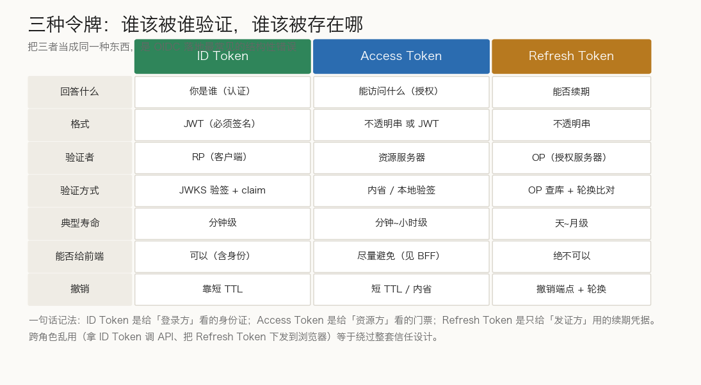

先说清楚这篇怎么写的
市面上的 OIDC 材料大多按「知识分类」组织：一节讲概念、一节讲流程、一节讲安全。那样写适合查阅，不适合从头读——因为你在第一章就会撞见后面才解释的术语。
这篇换一种写法：一条问题链。
每一个新方案，都是因为上一个方案有缺陷才出现的。你先看到缺陷，才会觉得新方案是必要的，而不是"又一套要背的规矩"。全文按这个顺序走：
- 一个真实需求（第 0 章）
- 最直觉的解法，以及它为什么必须被放弃（第 1 章）
- 于是有了 OAuth 2.0：一种"有范围的临时通行证"（第 2 章）
- 但通行证没说"你是谁"，于是有了 OIDC（第 3 章）
- 那句"你是谁"凭什么可信——签名（第 4 章）
- 上线之后会在哪里坏，以及怎么补（第 5 章）
- 速查、错误清单、结论（第 6-8 章）
约定：每章开头抛问题，结尾一句话回答。前面出现的概念都在前面解释过；如果某处必须提前用一个词，我会当场用一句话说明它是什么，不指望你往后翻。
只想拿结论的人，直接看第 8 章；想理解为什么，按顺序读。

第 0 章 一个具体需求
假设你在公司里做内部工具。现在有一个很具体的麻烦：
公司有两百多个内部系统——报销、代码仓库、监控面板、wiki、工单。每个系统都要登录。员工记不住两百套账号密码，运维也不愿意给两百个系统各做一套用户管理。有人离职，你得去两百个地方删账号。
你想要的是：员工在任何一个系统点"登录"，跳到一个统一的地方输一次密码，回来就已经是登录状态，而且各个系统都知道他是谁。
这个需求可以拆成两句话：
- 让 A 系统知道"现在这个人是谁"——这是认证（authentication）
- 让 A 系统知道"这个人能做什么"——这是授权（authorization）
这两件事经常被混为一谈，但它们的失败方式完全不同：认证错了，是把别人当成了你；授权错了，是你能做本不该做的事。后文所有设计都围绕这两件事分别展开，因为能证明"你是谁"的东西，通常不适合用来决定"你能做什么"，反之亦然。
先记住这个场景里的四个角色，后面会反复用到：
- 你：坐在电脑前的人
- A 系统：你想登进去的那个应用
- 公司账号系统：真正保管密码、负责验证"你是你"的那套东西
- 存数据的服务：A 系统真正要读写的那份数据（比如通讯录）
第 1 章 最直觉的解法，以及它为什么不行
1.1 把密码交给对方
最直接的做法是这样的：A 系统弹出一个框，让你输入公司邮箱和密码；A 系统拿到密码，转手拿去登录公司邮箱服务器；登录成功，A 系统读到你的通讯录。
这确实能用，而且历史上大量系统就是这么干的。但它有五个后果，RFC 6749 的开篇把这五条逐条写了出来。用平实的语言说：
第一，A 系统必须把你的密码存下来。 因为它下次还要用。存下来的东西就可能被读走——员工内鬼、SQL 注入、备份泄漏、日志误打。
第二，公司账号系统被迫永远支持密码登录。 你想上硬件密钥、想上短信验证码，只要还有第三方在替用户提交密码，你就不能关掉密码这条路。这是在为别人的架构缺陷付代价。
第三，A 系统拿到的是全部权限。 它只想读通讯录，但它拿到的是你账号能做的一切。你没有办法说"只给它读，不给它改"。
第四，你想收回权限，只能改密码。 一改，所有系统的登录全部失效。你没法只踢掉 A 系统一家。
第五，A 系统被攻破，等于你的密码被攻破。 而很多人到处用同一个密码——于是这一处失守，扩散到别处。
这五条其实指向同一个根：问题不在于你信不信任 A 系统，而在于你把一把能开所有门的钥匙，复制了一份交给它。 只要钥匙是复制出去的，你就永远收不回来，也永远不知道它被谁看过。
1.2 于是有了一张需求清单
把上面五条反过来写，就得到了后面所有机制的设计目标。这张清单很重要——后文每出现一个新机制，你都可以拿它对照：这是在满足哪一条？
| # | 需求 | 对应上面第几条 |
|---|---|---|
| 1 | 第三方应用绝对不能拿到用户密码 | 第一、五条 |
| 2 | 权限必须有范围，只给需要的部分 | 第三条 |
| 3 | 权限必须有期限，过期自动失效 | 第三、四条 |
| 4 | 必须能单独撤销某一家，不影响其他 | 第四条 |
| 5 | 单点失守时，损失范围要可控 | 第五条 |
这五条就是 OAuth 2.0 存在的全部理由。它不是"互联网公司搞的一套复杂规矩"，它是这五条需求的直接产物。
1.3 顺带回答：企业界不是早就解决了吗
如果你在企业环境待过，可能会问：SAML 不是早就能做单点登录了吗？
是的。SAML 2.0 在 2005 年就发布了，做法是：账号系统把"这个人已经通过认证"这个结论写成一个 XML 文档（叫断言），签上名，交给应用。应用验签后就知道是谁。今天你看到的"SaaS 企业版 SSO"，很多底层还是它。
它管用，但有两个代价：XML 的签名规范化极其繁琐（同样的内容有多种合法写法，签哪一份是个坑），移动端和 API 场景的体验也不好。
更关键的一点在后面：SAML 一开始就是奔着"认证"去的——它的产物就是"这个人是谁"。而 OAuth 走的是一条绕远的路：先解决"授权"（能做什么），认证是后来补上去的。
这个顺序差异，解释了后面所有别扭的地方：为什么 OIDC 要用一个叫 scope 的参数来决定"这是不是认证请求"，为什么 ID Token 会和 access token 长得像但用途完全不同。因为认证是搭在授权框架上加盖的一层，而不是重写一遍。

（图里会出现几个还没解释的名词——PKCE、ROPC、发送方约束。现在不用管它们，只要看出「每次都是补上一个的洞」就够了；它们分别在第 5 章出现。）
第 2 章 OAuth 2.0：一张有范围的临时通行证
2.1 核心想法：不发钥匙，发通行证
回到 1.2 那张清单。要同时满足"不给密码、有范围、有期限、能单独撤销"，答案是换一种东西交出去：
不交钥匙，交一张临时通行证。通行证上写明：谁能用、能开哪个门、什么时候作废、发证的是谁。
这个东西就叫 access token（访问令牌）。它有几个特点，都是照着清单设计的：
- 它不是密码，拿到它不能反过来推出密码
- 它带范围（只能读通讯录，不能改工资）
- 它带期限（比如一小时后自动失效）
- 它可以被单独作废，不影响别的通行证
2.2 一个必须现在就埋下的缺陷
通行证的验法很朴素：谁拿着它，谁就能用。服务器不会问"你真的是本人吗"，它只看这张纸对不对。
这种设计叫 bearer token（持有者令牌），名字来自"bearer"这个词——持票人。好处是实现极简单：资源服务器不需要跟发证方通信，也不需要密码学，看一眼纸就行。坏处也很直接：一旦这张纸被抄走，抄的人和你没有任何区别，服务器分辨不出来。
这个缺陷没法靠"设计得更好"消除，只能靠三种办法限制损失：让纸很快过期、把纸的用途限制得很窄、或者要求持纸人同时证明自己握有某把密钥（第 5 章会讲）。
先记住这个缺陷，因为后面一半的安全设计都是在应付它。
2.3 要讲清楚这件事，需要四个角色
用第 0 章的场景代入，四个角色各有专名（RFC 6749 §1.1）：
| 场景里的东西 | 专名 | 职责 |
|---|---|---|
| 你 | resource owner（资源所有者） | 授权别人代表你去拿数据 |
| A 系统 | client（客户端） | 代表你去申请通行证、使用通行证 |
| 公司账号系统 | authorization server（授权服务器，AS） | 验证你是谁、决定发不发通行证、发多大范围 |
| 存通讯录的服务 | resource server（资源服务器，RS） | 检查通行证、给出数据 |
这四者里有两个关系值得单独说：
AS 和 RS 可以是一家，也可以分开。 一个 AS 可以向很多个 RS 发通行证，这些 RS 都认它——这就是"一次登录、多个系统"的协议基础。公司账号系统发一张通行证，报销系统、wiki、监控面板都认。
client 在这条链上只是"出示者"，不是被信任的对象。 这句话是后面几乎所有安全结论的源头。通行证是发给"某个 client"的，但 client 本身不被信任——所以后面才会有"客户端分机密和公开两类""公开客户端必须额外加保护"这些设计。
2.4 通行证不能直接交给浏览器
现在遇到一个具体的工程矛盾。
A 系统是个网页应用。用户在浏览器里操作。那么"拿通行证"这个动作，也得发生在浏览器里。可浏览器是个很不安全的地方：
- 地址栏里的东西会进历史记录
- 页面跳转时，上一个地址会出现在
Referer头里，发给下一个网站 - 任何浏览器插件都能读页面内容
- 页面上任何一个 XSS 漏洞，都能读走 JavaScript 手里的东西
- 公司代理、上网行为管理设备会把 URL 记进日志
如果通行证直接出现在 URL 里，它就会被抄进上面所有这些地方。
解法是把"领通行证"拆成两段：先领一张提货券，再用提货券去后台换真凭证。
- 第一段（走浏览器）：A 系统把用户引导到公司账号系统的授权页面，用户在那里登录、确认授权。完成后，账号系统不返回通行证，只返回一张提货券。
- 第二段（走服务器）：A 系统的后端拿着提货券，直接连到账号系统的后端，换回真正的通行证。这一步浏览器完全不参与，也看不到。
两个通道有了名字：
- 前端通道（front channel）：经过用户浏览器的那条路。数据对浏览器、插件、页面脚本可见。
- 后端通道（back channel）：客户端服务器与授权服务器之间的直连 HTTPS。浏览器不可见。
一条铁律：提货券可以走前端通道，通行证不可以。
为什么提货券可以？因为它是专门为"可能被抄"设计的：
- 一次性，用过就作废
- 只有几分钟寿命（规范建议不超过 10 分钟）
- 绑定"发给哪个客户端"和"回调到哪个地址"
- 它本身不含任何身份信息，抄到也没用
这张提货券的专名叫 authorization code（授权码）。上面这套流程就叫授权码流程。名字听起来复杂，本质就一句话：把真凭证换到一个浏览器碰不到的地方去领。
2.5 把这一步摊开看
下面这张图把一次完整登录的九个动作按时间排开，标了每一步走哪条通道。

按顺序读：
第 1 步（前端） 用户点了 A 系统的"用公司账号登录"。A 系统生成一个跳转地址，把浏览器送过去。这个地址里带着：我是谁（client_id）、我要什么（scope）、办完回哪（redirect_uri）、以及一个防伪标记（state）。
第 2 步（前端） 浏览器到达公司账号系统。账号系统看这个请求：这个 client 我认识吗？它登记的回调地址和请求里的一致吗？我要给的范围合理吗？
第 3 步（前端） 用户在这里输密码、过二次验证。注意——密码只输给账号系统，A 系统永远看不到。这一条就是需求清单第 1 条的实现。
第 4 步（前端） 用户看到授权确认页："A 系统想访问你的通讯录（只读），同意吗？"这是需求清单第 2 条——范围由用户可见、可控。
第 5 步（前端） 账号系统把浏览器送回 A 系统登记的回调地址，URL 上挂着授权码和 state。A 系统先检查 state 是否和自己发出去的一致——不一致就说明这次回调不是自己发起的，直接丢弃。
第 6 步（后端） A 系统的后端拿着授权码，直连账号系统的 token 端点。这一步要证明"我确实是 A 系统"——通常用事先约定好的密钥（client_secret）。浏览器看不到这一步。
第 7 步（后端） 账号系统核对：这张码是我发的吗？过期了吗？用过吗？是发给这个 client 的吗？换码的人也确实是这个 client 吗？全过，才发通行证。
第 8 步（后端） 返回通行证（access token）、有时还有续期凭证（refresh token）、以及 OIDC 场景下的身份证（ID Token）。
第 9 步（后端/前端） A 系统用通行证去资源服务器取数据；资源服务器验通行证，通过就返回数据。
读这张图时值得停下来看一眼第 6 步和第 7 步的位置：它们都在后端通道上。 整个设计的关键就在这个位置关系上，而不在参数名字上。
2.6 "能开哪个门"怎么表达：scope
通行证上要写范围，用什么写？答案是 scope——一串用空格分开的词，比如 contacts.read calendar.write。
关于 scope 有三件事必须说清，因为它们是最常见的误解来源：
第一，它没有中央注册表。 每个账号系统自己定义自己认哪些词。read 在 A 家是只读，在 B 家可能根本不存在。所以跨系统对接时，"scope 名字对不上"是常态，不是 bug。
第二，账号系统可以不完全按你请求的发。 你请求三个，它可能只给两个。如果最终给的和你请求的不一样，它必须在响应里回传实际给了什么（响应里的 scope 字段）。客户端必须按回传的来，不能按自己请求的来。
第三，scope 是"范围"，不是"权限细则"。 它表达"这份委托覆盖多大一块"，没有层级、没有继承、没有条件判断。想表达"张三只能看自己部门的报销单"，那不是 scope 干的事——那必须在资源服务器那侧另做判断。
把它当权限系统用（比如塞位掩码、用逗号分隔、大小写混写），结果一定是跨实现互操作失败。
2.7 通行证快过期了怎么办
通行证故意做得短命（分钟级），这样被抄走也只能用一小会儿。但用户体验会崩：每几分钟就要重新登录一次。
直觉解法是"把有效期设长"——但这正是要避免的：有效期越长，被抄走后能用的窗口越长，等于用安全性换便利。
真正的解法是拆成两个东西：
- access token：短命，用来访问资源。天天用，过期就换。
- refresh token（刷新令牌）：长命（天到月级），只用来换新的 access token，不直接访问任何资源。
refresh token 有三处和 access token 完全不同，值得单独记：
它的权限更大。 它代表"完整的这次授权"，能反复换取新的通行证。所以它比 access token 更值钱，也更需要保护。
它只能给授权服务器看。 永远不要把它发给资源服务器。资源服务器只需要 access token；把 refresh token 发过去，等于把续期权交给了不该有这个权的地方。
它必须能被单独作废。 用户点了"退出所有设备"，作废的应该是它。
这又带来一个新问题：refresh token 寿命长，一旦被偷，攻击者可以长期续期。解法是轮换——每次用它换新 access token 时，同时发一个新的 refresh token，旧的立刻作废。合法客户端手里永远是新的那个；如果旧的那个被再次使用，说明有两个人拿着同一份东西，服务端立即判定泄漏，把整条授权链作废。
规范（RFC 9700）对公开客户端的要求是硬的：refresh token 必须做轮换，或者做"发送方约束"（绑到某把密钥上），二者至少其一。
2.8 想提前收回怎么办
通行证有期限，但有时候你需要立刻作废——员工离职、手机丢了、用户点了"断开连接"。有两个机制：
撤销（revocation）：客户端主动告诉授权服务器"这张不用了"，立即生效，还可能连带作废同一次授权下的其他凭证。即使提交的凭证本来就是无效的，也返回成功——因为目的已经达到，没必要暴露"这张是否存在"。
内省（introspection）：资源服务器拿着通行证去问授权服务器"这张还有效吗、是谁的、什么范围"。返回里有个 active 字段，是核心。
一句话区分：撤销是"写入失效"，内省是"读取状态"。
内省这个端点自己必须受保护（要求调用方先认证），否则它会变成一个"通行证探测器"——攻击者可以拿它批量试哪些 token 还有效。
2.9 但这里有个结构性难题
现在把 2.1 那个缺陷和 2.8 的机制放在一起看，会发现一个矛盾：
如果通行证是自包含的（内容都写在里面，资源服务器不用问任何人、本地验一下就能用），那它性能极好——但也有个代价：你没法立刻作废它。因为它已经发出去了，资源服务器手里有一份副本，它只看内容，不问发证方。
反过来，如果通行证是不透明的（就是一串随机字符，什么信息都不含），那资源服务器每次都得去问授权服务器——能即时作废，但每次访问多一次网络往返，而且授权服务器成了单点。
这是个真实的取舍，没有免费答案。第 5 章会给出三条出路。
2.10 本章小结
对照 1.2 那张清单，OAuth 2.0 逐条应答：
| 需求 | 满足它的机制 |
|---|---|
| 不给密码 | 密码只在授权服务器输入，客户端永远看不到 |
| 有范围 | scope + 用户可见的授权确认页 |
| 有期限 | access token 短 TTL |
| 能单独撤销 | refresh token 独立作废 + 撤销端点 |
| 损失可控 | 短 TTL、窄 scope、可撤销的续期凭证 |
到这里，"授权"这件事解决了。但第 0 章的需求还有一半没答：A 系统怎么知道"现在这个人是谁"？
第 3 章 通行证说了"能做什么"，没说"你是谁"
3.1 一个具体的坏味道
接着上面的场景。A 系统拿到了 access token，能读通讯录了。但它要显示"张三，早上好"——这行字需要名字。而通行证里没有名字。
于是各家开始自己发明：Facebook 搞了一套 Signed Response，Twitter 另做一套 profile 接口，Evernote 再搞一套。字段名不一样、错误语义不一样、"这个人唯一标识"用哪个字段也不一样。
这就是 OIDC 要解决的事：把"刚才登录的是谁"这个结论，标准化成一份可校验的产物。
注意这句话的两个关键词：标准化（大家用同一套字段）和可校验（拿到就能自己判断真伪，不用再问服务器）。
3.2 一个参数决定这是不是认证请求
OIDC 是搭在 OAuth 上的，所以它没有另起一个端点。它复用了同一个授权端点、同一套流程，只加了一个开关。
这个开关就是：授权请求里必须包含 openid 这个 scope。
带了，这次请求就是"认证请求"，账号系统会在响应里额外给你一份 ID Token。 不带，它就只是一次普通的 OAuth 授权请求——规范原话是"行为完全未定义"，通常不会给你任何身份信息。
这个参数值得记住，因为调试时它是第一个要检查的东西："为什么我没拿到 id_token？"——先看请求里有没有 openid。 十次里有八次是漏了它。
3.3 ID Token：一张自带签名的身份证
OIDC 给出的产物叫 ID Token。它和 access token 放在一起返回，但两者是完全不同的东西：
| access token | ID Token | |
|---|---|---|
| 给谁看 | 资源服务器 | 应用自己（RP） |
| 内容 | 允许做什么（授权） | 刚才登录的是谁（认证） |
| 受众字段写什么 | 资源服务器的标识 | 应用的 client_id |
| 能不能拿去调接口 | 能 | 绝对不能 |
最后一行是个高频事故：拿 ID Token 当 access token 去调 UserInfo 或业务接口，服务器会拒绝（受众不对）。
ID Token 有一个关键性质，是 access token 不一定有的：它是被签名的。
这意味着应用拿到它之后，不需要再连回账号系统问"这份东西是真的吗"——它自己就能验证内容有没有被改过。所以 ID Token 可以安全地经过浏览器传递：改写它必然导致签名失效。
（"签名"到底怎么做到这一点，是第 4 章的主题。这里只需要知道结论：签名让篡改可被发现。）
3.4 五个字段，每个都对应一个"如果少了会怎样"
ID Token 只强制五个字段。理解它们最好的方式，不是背定义，而是想"如果没有它，会出什么事"：
| 字段 | 含义 | 少了它会怎样 |
|---|---|---|
iss |
谁签发的 | 无法确认来源。攻击者可以拿另一个账号系统签的 token 来冒充 |
sub |
这个人在这个签发者这里的唯一编号 | 建不起账号体系。而且光有 sub 不够，必须和 iss 一起用 |
aud |
这张是发给谁的 | A 应用的 ID Token 可以直接拿去 B 应用用（受众不匹配就应拒绝） |
exp |
什么时候失效 | 永久有效，等同于一张永不过期的身份证 |
iat |
什么时候签发的 | 无法判断新鲜度，无法识别"很久以前签发的旧 token 被重放" |
其余字段（name、email、picture 等）都是要了才给——你得在请求里写 scope=openid profile email，账号系统才会放进去。这也符合最小必要原则：不需要的信息就别要。
这里引出一个必须说清的结论：sub 加上 iss 才是唯一标识，单独任何一个都不是。
为什么不能直接用 email 当账号主键？因为邮箱在现实中会变：员工换名字会改邮箱前缀、离职后邮箱会被回收再分配给新人、用户自己在别的系统里改了主邮箱。任何一种情况，都会让"同一个 email"指向不同的人——你的系统会串号，把新员工的账号接到前员工的旧数据上。
规范写得很直接：email、phone_number、preferred_username、name 都不得用作唯一标识。正确做法是拿 (iss, sub) 这一对做唯一键，email 只当可变的展示属性，并且看 email_verified 这个布尔值判断它是否已验证过。
3.5 想要更多信息：UserInfo
ID Token 里只放最少的东西。要头像、要部门、要手机号，还有个专门的接口叫 UserInfo：拿 access token 去问账号系统，它返回一份用户资料。
这里有一条必须做的检查，做漏了就是漏洞：UserInfo 返回里的 sub，必须和 ID Token 里的 sub 完全相等。不相等，整份资料一律不许用。
为什么？因为这是防"换票"的唯一标准手段。攻击者可以拿自己的 access token 去要一份资料，然后想办法把这份资料塞进你的会话里——你如果直接拿返回结果覆盖本地用户资料，就把攻击者的身份当成了当前用户。
3.6 三种流程，以及为什么现在只剩一种
OIDC 定义了三种流程，用请求里的 response_type 区分。这个映射是固定的，不能自创组合：
response_type |
流程 | token 经过浏览器吗 | 能发 refresh token 吗 |
|---|---|---|---|
code |
授权码流程 | 不经过 | 能 |
id_token、id_token token |
隐式流程 | 经过（在 URL 片段里） | 不能 |
code id_token、code token 等 |
混合流程 | 部分经过 | 能 |
隐式流程当年是为了绕开浏览器的跨域限制设计的——token 直接从 URL 片段返回，不用后端参与。但它把 access token 暴露在了浏览器里，正好踩中 2.4 讲的每一条风险。现行安全规范（RFC 9700）对它的判断是 SHOULD NOT：除非有特别理由，不要用。
另一种叫 ROPC（资源所有者密码凭证），做法是让用户把密码直接输进客户端，客户端拿去换 token。这等于把 1.1 的密码反模式又请回来了，规范措辞是 MUST NOT be used。
只有授权码流程同时满足四个条件：token 不从浏览器过、能做客户端认证、能发 refresh token、能被 PKCE 保护（第 5 章）。所以新系统的选择其实只有一个。
3.7 本章小结
到这一步，第 0 章的需求完整了：一次登录，A 系统既拿到了"能做什么"（access token + scope），也拿到了"你是谁"（ID Token + UserInfo），而且这些结论可以自己验证真伪。
但"可以自己验证真伪"这句话，还没有解释。凭什么一个字符串能自证没被改过？
第 4 章 那句话凭什么可信：签名
4.1 先讲直觉，不碰算法
先说一个日常类比：手写签名 + 身份证。
身份证上有照片和信息，谁都能看（不怕被看）。但它不容易被伪造，因为伪造需要专门的设备和工艺（别人做不到）。查验的人不需要会造身份证，只要会辨别真伪（验证成本低）。
数字签名把这三件事做得更彻底：
- 只有持有私钥的人能生成签名。 私钥在签发方手里，不外传。
- 任何人拿到公钥都能验证。 公钥是公开的，可以挂在网上。
- 改一个字节就验不过。 内容哪怕改一个字符，签名立刻失效。
这就解释了 3.3 那个结论：ID Token 之所以能放心经过浏览器，是因为它不怕被看（内容本来就是给应用看的），也不怕被改（改了验不过）。
4.2 JWT：只是个装内容的约定
ID Token 用 JWT（JSON Web Token）这个格式承载。很多人以为 JWT 是加密算法，不是——它只是一种"怎么把内容装进去"的约定。
一个 JWT 是三段文本，用两个点分开：
header.payload.signature
- header：说明用什么算法签的、用哪把钥匙（
alg、kid）。这段是明文，而且完全由发送方控制——记住这一点，4.4 会用到。 - payload：真正的 claim（
iss、sub、aud……）。这段只是 base64 编码，不是加密。 - signature：唯一能证明完整性的部分。
关于 payload"只是编码"这件事，值得单独强调，因为它是误解重灾区：任何人拿到 JWT，都能把中间那段解出来读。 不需要密钥，不需要工具，浏览器控制台一行代码就行。
推论很直接：不要往 token 里放敏感数据（手机号、身份证号、内部标识）。如果确实需要让内容对持有者也不可见，得用加密形态 JWE——它有五段（多出加密密钥、初始向量、认证标签），内容对没有密钥的人不可读。OIDC 的 ID Token 按规范是签名形态，所以它默认是"可读但不可改"的。
4.3 验签验的到底是什么
一个容易被忽略的细节，但它导致过大量"签名永远对不上"的疑难杂症。
签名不是对"内容"签的，是对编码后的文本签的。也就是说，签名覆盖的是 base64url(header) + "." + base64url(payload) 这一串字符。
所以验证方必须原样使用收到的这两段字符，不能先解码、再重新序列化。一旦解码重排（键顺序变了、空格变了、Unicode 转义形式变了），字节就变了，签名自然对不上。
最危险的不是这个 bug 本身，而是有人为了"修好它"去放宽校验——比如验不过就跳过、或者只比对部分字段。那一瞬间，验签就形同虚设了。
4.4 算法写在 header 里，但你不能信它
现在回到 4.2 埋的那个点：header 里的 alg 字段，由发送方控制。
历史上绝大多数 JWT 安全事故，根源都不是密码学被攻破，而是验证方把这个字段当成了配置。三种典型：
第一种：alg=none。 攻击者把 header 改成 {"alg":"none"}，把签名段清空。如果验证库直接按 header 说的来，它会认为"这张不需要签名"，于是"无签名"变成了"验签通过"。
第二种：算法降级。 服务端本来用 RS256（非对称，公钥验证）。攻击者把 header 改成 HS256（对称，同一把密钥既签又验），然后把服务端公开的 RSA 公钥当成 HMAC 密钥来签名。如果库不锁定算法，它就会用公钥去验——验过了。攻击者自己就能造 token。
第三种：从 header 里取公钥。 header 里有 jku、x5u 这类字段，指向"去哪下载公钥"。如果验证方真的按这个地址去取，等于让攻击者指定用哪把钥匙——他当然指定自己的。
安全规范（RFC 8725，也就是 BCP 225）因此把两条写成硬性要求：
- 库必须让调用方事先指定允许的算法集合，不能由 token 自己声明。
- 每把密钥只对应一种算法，不允许一把密钥跨算法复用。
用一句话概括正确姿势：header 只能用来"在你允许的清单里挑一把钥匙"，绝不能用来决定"允许哪些算法"，也不能决定"去哪取钥匙"。
4.5 密钥要能换：JWKS 和 kid
新问题来了。签名密钥不能永远不换——可能泄漏了、可能合规要求定期轮换、可能要升级算法。但一换，所有已经发出去的 token 都验不过了。
解法是让验证方动态知道有哪些公钥可用：
签发方把自己所有的公钥公布成一个列表，叫 JWKS（JSON Web Key Set）。每把公钥带一个编号，叫 kid。token 的 header 里写 kid，验证方按编号去列表里找对应的那一把。
这样一来，"用哪把公钥"从写死在配置文件里的东西，变成了可以自动发现、可以轮换、可以缓存的运行时数据。这是 OIDC 能支撑大规模联邦的技术前提之一。
代价是它同时变成了一个可用性风险点。三个参数必须想清楚：
- 缓存多久（常见做法 5-10 分钟）
- 遇到不认识的 kid 要不要重新拉取（要，但必须限流，否则会被打爆）
- 旧公钥保留多久（必须保留到所有用它签发的 token 都过期之后）
这三个配错，就会在密钥轮换的那一刻，或者在一次攻击流量下，把账号系统的公钥端点打挂——然后所有依赖它的系统一起登不上。
4.6 算法怎么选
不用太纠结，跟着账号系统的 discovery 元数据走就行。但知道区别有用：
| 算法 | 类型 | 关键点 |
|---|---|---|
| HS256 | 对称（HMAC） | 能验的人就能签。在"一方签发、多方验证"的拓扑里，等于把签发权复制给了所有验证方 |
| RS256 | RSA | 生态默认，兼容性最好；签名较长 |
| PS256 | RSA-PSS | RSA 的现代选择，填充方案更安全 |
| ES256 | ECDSA P-256 | 签名短（64 字节），适合高并发；但格式易错，且随机数复用会直接泄漏私钥 |
HS256 的根本问题值得单独说：它用同一把密钥签名和验证。在 OIDC 的典型拓扑里（一个账号系统签发，成百上千个应用验证），这意味着每个应用都握有"签发权"。任何一个应用被攻破，全局签发权就失守了。所以联邦场景基本不用它。
第 5 章 上线之后，它会在哪里坏
协议读懂了，系统仍然可能不安全。这一章按"具体攻击 → 具体补丁"的顺序走，每一条都从攻击场景讲起，而不是从参数名讲起。
5.1 攻击一：别人把他的提货券塞给你
场景：攻击者自己发起一次登录，拿到一张授权码，但不拿去换 token。他想办法让受害者的浏览器用这张码完成登录。结果：受害者登录后，会话绑在攻击者的账号上；受害者之后上传的资料、绑定的支付方式，全进了攻击者的账户。
这类攻击叫授权码注入。
防御：PKCE（Proof Key for Code Exchange，读作 "pixy"）。
做法很朴素：
- 客户端在发起登录前，自己生成一个随机串，叫
code_verifier（43 到 128 个字符）。 - 把这个串做一次哈希，得到
code_challenge，随授权请求一起发出去。 - 换 token 时，把原始的
code_verifier提交上去。 - 账号系统算一次哈希，和之前收到的
code_challenge比对。
效果：授权码即使被截走，没有对应的 code_verifier 也换不出 token。 而 code_verifier 从头到尾只在客户端和账号系统之间传，从没经过浏览器。
几个要点：
- 必须用
S256（SHA-256）这个哈希方法。另有plain方式（直接发原文），但那等于没保护，只是为了兼容极老的实现才保留。 - 公开客户端（浏览器应用、手机 App）必须用；机密客户端（有后端的 Web 应用）是推荐用。
code_challenge必须每次登录重新生成，不能复用，而且要绑定到发起时的那个浏览器会话。
5.2 攻击二：别人把你引到假的登录流程里
场景：攻击者先在自己的浏览器里发起登录，走到一半停住，拿到一个"半成品"的授权码。然后他构造一个链接，诱导受害者点击，让受害者的浏览器带着这个码回到应用。受害者完成登录后，绑定的其实是攻击者的身份。
这类攻击属于 CSRF（跨站请求伪造）家族。
防御：state 参数。
做法：发起登录时生成一个随机值，存在本地（比如 session），随授权请求发出去；回调时把这个值和本地存的比对，不一致就丢弃这次回调。
它绑定的是"这次回调"和"我这个浏览器会话"——攻击者不知道你本地存的那个值，所以伪造不出能通过校验的回调。
5.3 攻击三：重放一张旧的身份证
场景：攻击者截获了一份以前签发的 ID Token，在它过期前反复提交给应用，让应用以为用户刚刚又登录了一次。
防御：nonce。
做法：发起认证请求时带一个随机值，账号系统必须把它原样写进 ID Token；应用收到后比对，并且要记录"这个 nonce 已经用过了"，防止重复使用。
有一条容易被忽略但很关键：nonce 一旦带上，就必须校验。带了却不校验，等于没带——而且更糟，因为你以为自己有防护。
在授权码流程里 nonce 是可选的；在隐式流程和混合流程里是必需的（因为那些流程里 token 直接从浏览器返回，风险更高）。
5.4 三个参数的分工，别搞混
state、nonce、PKCE 三个东西经常被混为一谈，因为都长得像"随机串"。区别不在于随机不随机，而在于各自把什么钉在一起：
| 参数 | 钉住什么 | 谁来验 | 防什么 | 规范要求 |
|---|---|---|---|---|
state |
回调 ↔ 本次浏览器会话 | 应用前端 | CSRF、登录劫持 | 建议使用 |
nonce |
ID Token ↔ 本次认证请求 | 应用验 token 时 | token 重放、注入 | 带上就必须校验 |
| PKCE | 授权码 ↔ 发起它的那个客户端实例 | 账号系统 | 授权码拦截、注入 | 公开客户端强制 |
三者可以叠加，不能互相替代。 少一个就少一层防护。特别地，用 nonce 代替 PKCE 只有在"机密客户端 + 有其他额外防护"的条件下才被允许。

5.5 攻击四：回调地址被做手脚
场景：应用登记的回调地址是 https://legit.example.com/cb。如果账号系统用"前缀匹配"来校验，攻击者可以注册 https://legit.example.com.evil.com/cb——它的前缀正好是合法地址。或者利用路径穿越：https://legit.example.com/cb/../open。授权码就被送到了攻击者那里。
防御：整串精确比较。
规范要求把请求里的 redirect_uri 和登记的那个做逐字符比较（等价于 RFC 3986 的简单字符串比较）。后来的安全规范把它上升为必须。
唯一的例外是原生 App 用 http://127.0.0.1:port 这种本机回调，允许端口变化——因为监听端口是系统随机分配的。
代价很实在：每加一个回调地址，都要去账号系统改注册。这个代价必须付。凡是允许通配符或前缀匹配的实现，都等于给授权码窃取开了一扇门。
5.6 多账号系统时的额外风险：Mix-Up
场景：企业应用常常同时支持多个身份来源（公司账号、Google、某个合作方）。攻击者操纵流程，让应用把 A 家发的授权码，发到 B 家的 token 端点去换；或者反过来，让 B 家的 token 被当成 A 家的接受。
这种攻击叫 Mix-Up（混搭）。
防御：每个账号系统用独立的 redirect_uri（而不是共用一个），并且严格校验 token 里的 iss 是否等于你预期的那个签发者。
这条在企业环境里特别重要，因为"多 IdP"是常态而不是例外。
5.7 token 存哪里：没有好选项
拿到 token 之后要存在客户端。这是纯工程问题，而且没有正确答案，只有取舍：
| 存放位置 | 页面脚本能读到吗 | 能跨会话保留吗 | 主要问题 |
|---|---|---|---|
| JavaScript 变量（内存） | 能 | 不能，刷新即丢 | 体验差，仍要考虑刷新 |
sessionStorage |
能 | 同标签页内 | 一次 XSS 就能全拿走 |
localStorage |
能 | 能，长期 | XSS 窃取后果最重，且长期有效 |
| HttpOnly Cookie | 不能 | 可控 | 需要处理 CSRF，受跨站限制 |
结论指向一个架构选择：BFF（Backend for Frontend）+ HttpOnly Cookie。
做法是：浏览器里不存 token，只存一个 HttpOnly 的会话 cookie（页面脚本读不到）；真正的 token 存放在后端，前端通过自己的后端转发请求。
这不是因为它完美——它引入了额外的后端、需要处理 CSRF、要管会话存储。而是因为其他选项都更差：只要 token 进了 JavaScript 的作用域，一个 XSS 就能把它带走，而你没有任何补救手段。

5.8 登出比想象中难
用户点"退出"，直觉是"把本地 cookie 删了就行"。不够。有三件事必须同时做：
- 清掉应用自己的本地会话（cookie、内存状态）。
- 结束账号系统的 SSO 会话。 否则用户在账号系统那边还是登录状态——点开另一个应用，又自动登进去了。用户会觉得"我明明退出了"。
- 通知其他已经登录的应用。 这一步在单点登录环境里是必需的，否则用户在一个地方退出，别的系统还以为他在线。
第 3 步必须走后端通道。因为前端通道的登出依赖"浏览器还愿意跳转"——用户直接关掉页面、或者断网，跳转就不会发生。真正的全局登出只能靠账号系统从后端主动调用各应用的登出端点（这叫 Back-Channel Logout）。
顺带说一个高频误解：ID Token 的 exp 不是会话寿命。 它只是那份 token 自身的有效期，和应用与账号系统之间的登录会话多长时间完全无关。为了让用户"保持登录"而把 ID Token 的 exp 设得很长，只会让 token 泄漏后的可利用窗口同步扩大。
5.9 回到 2.9 那个难题：能不能又要快又要能撤销
第 2.9 节留了一个矛盾：自包含的 token 能离线快验但难撤销，不透明的 token 能即时撤销但每次要问服务器。
有两条出路：
出路一：接受取舍，用短 TTL 把窗口压小。 这是最普遍的做法——access token 5 到 15 分钟，refresh token 可撤销。宁可让攻击者的窗口只有几分钟，也不追求"零窗口"。
出路二：发送方约束（sender-constrained token）。 把 token 绑定到某个只有合法持有者才有的东西上：
- mTLS：客户端用自己的证书建立双向 TLS，token 绑定到证书指纹。攻击者拿到 token 但没有对应私钥，用不了。
- DPoP：客户端生成一对密钥，每次请求时用自己的私钥签一个证明。token 绑定到那把公钥。
这是唯一不依赖"短 TTL"的解法，也是当前安全规范对 bearer token 缺陷给出的正面回答。代价是客户端要实现密钥管理和签名，工程复杂度上一个台阶。
对比一下：
| 形态 | 怎么验证 | 能否即时撤销 | 适合什么场景 |
|---|---|---|---|
| 不透明 token | 每次问授权服务器（内省） | 能 | 高安全要求，能接受一次网络往返 |
| JWT access token | 本地验签 | 难，只能等它过期 | 高并发、低延迟、多资源服务器 |
| 发送方约束 token | 本地验签 + 证明持有密钥 | 能（密钥可吊销） | 高安全 + 高性能，愿意承担复杂度 |
5.10 密钥轮换：最常见的"上线才炸"
机制本身很简单：账号系统定期换签名密钥，通过 JWKS 同时公布新旧公钥，等旧 token 都过期了再撤掉旧公钥。
出错点几乎总在窗口计算上：
- 旧公钥撤太早 → 还有效的 token 突然验不过，全线 401。
- token 里不带
kid→ 轮换期间无法判断该用哪把钥匙。 - 把
kid当信任依据 → 攻击者伪造一个同名kid就能混淆。
一个必须写进运维手册的检查项：
旧公钥的保留时间 ≥ 旧 token 的最长有效期 + 客户端 JWKS 缓存时长 + 时钟偏移容忍。
第三个加项容易被忘。分布式系统的时钟不会完全一致，不留一点余量，就会在边界时刻随机拒绝合法 token——表现为"间歇性 401"，极难定位。
第 6 章 速查：最容易混的八组概念
到这里所有概念都出现过一遍了。这一章是给回头查阅用的，不需要顺序读。
| 容易混的一对 | 区别 | 一句话记忆 |
|---|---|---|
| 认证 / 授权 | 你是谁 vs 你能做什么 | 认证的产物不能反推授权，反之亦然 |
| OAuth 2.0 / OIDC | 授权框架 vs 认证协议 | 看有没有 openid scope 和 ID Token |
| ID Token / Access Token | 给应用看的身份证 vs 给资源服务器看的门票 | 看 aud 写的是 client_id 还是资源服务器 |
| Access Token / Refresh Token | 访问凭据 vs 续期凭据 | refresh token 永远不发给资源服务器 |
| scope / 权限 | 委托范围 vs 资源实例级策略 | scope 无层级、无继承、无条件 |
state / nonce / PKCE |
绑会话 / 绑请求 / 绑客户端实例 | 三者可叠加，不可互相替代 |
| 撤销 / 内省 | 写入失效 vs 读取状态 | 一个改数据，一个读数据 |
| 签名 / 加密 | 防篡改 vs 防偷看 | JWT 的 payload 是明文，不是密文 |
另外两组容易混的：
exp/ 会话寿命：前者是 token 自身的有效期，后者是"用户多久需要重新登录"，两套机制。- issuer / tenant：issuer 是一个标识字符串，tenant 是用 issuer 表达出来的逻辑隔离实例。
https://example.com和https://example.com/tenant-a是两个不同的 issuer，它们的sub不能互相认。
第 7 章 错误清单：按后果排序
| 错误做法 | 后果 | 正确做法 |
|---|---|---|
| 把 ID Token 当 access token 调接口 | 请求被拒；或在不该信任的地方信任了它 | ID Token 只用来建立本地会话，调接口用 access token |
只验签名，不校验 aud 和 iss |
任何账号系统签的 token 都能登进你的应用（跨租户/跨应用登录） | 三个都要校验，且 iss 要精确等于预期值（含 path） |
| 用 email / 用户名做账号主键 | 邮箱回收或变更时账号串号 | 用 (iss, sub) 做唯一键，email 只作展示 |
把 header 里的 alg 当配置 |
alg=none、算法降级、任意公钥地址 |
算法白名单由验证方事先固定 |
redirect_uri 用前缀或通配符匹配 |
授权码被送到攻击者域名 | 逐字符精确比较，仅 localhost 允许端口可变 |
| 公开客户端不上 PKCE | 授权码被截即可换 token | 强制 S256 |
带了 nonce 但不校验 |
以为有防护，实际为零 | 带就必须比对并防重放 |
UserInfo 返回不比对 sub |
身份替换，别人的资料进了当前会话 | 比对失败则整份丢弃 |
把 token 放 localStorage |
一次 XSS 即长期失守 | BFF + HttpOnly Cookie |
为"保持登录"拉长 ID Token exp |
泄漏窗口同步扩大 | 短 TTL，会话单独管理 |
| 新项目仍选隐式流程 | token 暴露在浏览器 URL | 授权码流程 + PKCE |
| 旧公钥撤得太早 | 轮换瞬间全线 401 | 按 5.10 的公式算保留窗口 |
第 8 章 结论
这条链最后收在哪里。 从一个"不想给密码"的需求出发，得到了一张有范围、有期限、可撤销的通行证（OAuth 2.0）；发现通行证答不了"你是谁"，于是加了一份带签名的身份证（OIDC）；身份证能自证，靠的是签名（JWT/JOSE）；而所有这些东西在真实系统里会以四种方式坏掉——参数没绑对、回调地址没锁死、token 存错地方、密钥轮换窗口算错（工程与攻防）。这四层是层层依赖的，任何一层缺失，系统都会以"看起来能登录"的方式坏掉。
证据支持什么（已确认）。 以下判断都能回溯到规范原文，不是二手转述：
- OAuth 2.0 是授权框架，本身不提供终端用户认证。OIDC Core 开篇明确写了这一点。
- 判断一次请求是不是认证请求，看有没有
openidscope；缺了它，行为规范上未定义。 - ID Token 的必需 claim 只有五个：
iss、sub、aud、exp、iat。 - 唯一可依赖的稳定用户标识是
(iss, sub)组合；email、用户名、昵称明确不得用作唯一标识。 - 授权码流程是唯一同时满足"token 不经浏览器、可客户端认证、可发 refresh token、可被 PKCE 保护"的流程。
- 公开客户端必须用 PKCE 且必须是 S256；隐式流程在现行安全规范里是 SHOULD NOT，ROPC 是 MUST NOT。
- JWT 事故的主要成因不是密码学被攻破，而是验证方把攻击者可控的 header 当配置。
仍不确定什么。 三类内容我没法从规范原文确认，只作趋势描述，请按较低确定性看待：
- 各厂商 IdP 的具体实现差异（元数据字段的取舍、默认 TTL、是否默认强制 PKCE）。这类差异只能逐家实测。
- OAuth 2.1 的最终定稿状态与生效时间。草案已删除隐式流与 ROPC，但"草案"不等于"现行标准"。
- FAPI、各国电子身份体系的合规要求，以及 SAML 的深度细节——本文都未覆盖。
下一步能做什么。 如果你明天就要接一个 OIDC，按这个顺序落地比较稳：
- 选授权码流程 + PKCE（S256），不要考虑其他流程。
redirect_uri逐字符登记，不用通配符。- 校验五件事：签名、
iss（精确含 path）、aud（含自己的client_id）、exp（留几分钟 leeway）、nonce（如果带了）。 - 账号主键用
(iss, sub)，email 只作展示。 - token 存后端，前端只拿 HttpOnly cookie（BFF）。
- refresh token 开轮换，并处理"旧 token 被重放"的告警。
- 密钥轮换窗口按 5.10 的公式算，写进 runbook。
什么会改变这些结论。 三种情况：
- 如果 OAuth 2.1 正式发布并成为强制基线，第 3.6 节的"隐式流已退场"会从"规范建议"变成"标准要求"，但结论方向不变。
- 如果 DPoP / mTLS 类发送方约束成为主流默认，第 5.9 节的取舍会被削弱——那时"短 TTL"更多是纵深防御而非主要手段。
- 如果出现新的浏览器端凭证保护机制（比如更成熟的 WebAuthn 绑定方案），第 5.7 节"token 存后端"的结论可能松动。目前没有看到这种替代。
附录：参考来源
本文所有规范类结论均回溯到以下一手文档（本地已存档原文）：
- RFC 6749 — The OAuth 2.0 Authorization Framework（2012-10，Obsoletes RFC 5849）
- RFC 6750 — Bearer Token Usage
- RFC 7009 — Token Revocation
- RFC 7517 — JSON Web Key (JWK)
- RFC 7519 — JSON Web Token (JWT)
- RFC 7636 — Proof Key for Code Exchange (PKCE)
- RFC 7662 — Token Introspection
- RFC 8414 — Authorization Server Metadata
- RFC 8628 — OAuth 2.0 Device Authorization Grant
- RFC 8725 — JSON Web Token Best Current Practices（BCP 225）
- RFC 9068 — JWT Profile for OAuth 2.0 Access Tokens
- RFC 9700 — Best Current Practice for OAuth 2.0 Security
- OpenID Connect Core 1.0（含 errata set 2）
- OpenID Connect Discovery 1.0
- OpenID Connect Back-Channel Logout 1.0
补充参考：
- oauth.net — 关于"OAuth 2.0 不是认证协议"的说明
- RFC 5849 — The OAuth 1.0 Protocol（历史对照）
- draft-ietf-oauth-v2-1-13 — OAuth 2.1 草案